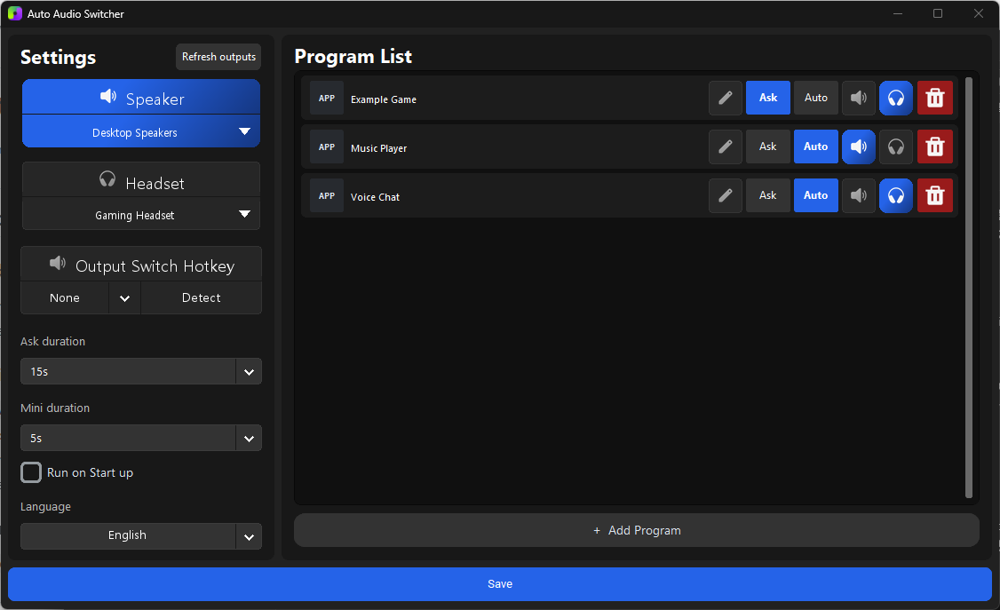
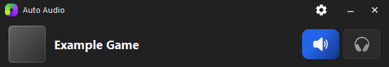

프로그램별 자동 전환
지정한 게임이나 앱이 실행되면 원하는 스피커 또는 헤드셋을 기본 출력으로 설정합니다.
Windows 10·11 · x64 · 무료 유틸리티
게임이나 지정한 프로그램이 시작되면 Windows 기본 출력 장치를 스피커에서 헤드셋으로 자동 변경합니다. 프로그램 종료 후 원래 출력으로 돌아가거나, 변경 전에 확인창을 표시할 수도 있습니다.
Python 설치 불필요 · 관리자 권한 불필요 · 압축 해제 후 바로 실행
한 화면에서 설정
설정창에서 두 출력 장치를 선택하고 프로그램마다 원하는 전환 방식을 지정할 수 있습니다. 작은 미니 창으로 현재 상태도 빠르게 확인할 수 있습니다.

Windows 오디오 전환을 간단하게
매번 Windows 사운드 설정을 열지 않고 자주 사용하는 출력 장치와 프로그램을 연결할 수 있습니다.
지정한 게임이나 앱이 실행되면 원하는 스피커 또는 헤드셋을 기본 출력으로 설정합니다.
오디오 장치를 바꾸기 전에 확인창을 표시해 원하지 않는 자동 변경을 방지합니다.
Windows 사운드 설정을 열지 않고 전역 단축키로 설정된 두 장치를 전환합니다.
스피커나 헤드셋이 잠시 꺼져 있어도 선택한 장치 프로필과 규칙을 유지합니다.
현재 실행 중인 프로그램 목록에서 앱을 찾거나 EXE 파일을 직접 선택할 수 있습니다.
Windows 디스플레이 해상도와 DPI 배율에 맞춰 설정창 크기와 구성이 조정됩니다.
몇 분이면 설정 완료
기본으로 사용할 스피커와 헤드셋을 지정합니다.
실행 중인 앱을 선택하거나 EXE 파일을 찾아 규칙을 만듭니다.
확인 후 변경할지 즉시 자동 전환할지 결정합니다.

개인정보 보호
Auto Audio Switcher는 텔레메트리를 수집하거나 실행 정보를 서버로 전송하지 않습니다. 설정, 아이콘 캐시와 제한된 진단 로그는 현재 Windows 사용자 폴더에 저장됩니다.
자주 묻는 질문
아니요. Windows 배포 ZIP에 Python과 필요한 라이브러리가 포함되어 있어 압축을 해제하고 EXE 파일을 실행하면 됩니다.
가능합니다. 게임 실행 파일을 프로그램 목록에 추가하고 목표 출력과 AUTO 동작을 선택하면 됩니다.
필요하지 않습니다. 일반 사용자 권한으로 실행되며 쓰기 가능한 데이터는 현재 사용자의 로컬 앱 데이터 폴더에 저장됩니다.
선택한 장치가 일시적으로 꺼져 있더라도 장치 프로필과 프로그램 규칙을 유지하도록 설계되어 있습니다.
현재 직접 다운로드 EXE에는 Authenticode 코드 서명이 없습니다. 반드시 공식 GitHub 릴리스에서 내려받고 공개된 SHA-256 값을 확인하세요.
현재 버전 v1.1.0
필요한 실행 환경이 포함된 Windows x64 ZIP을 내려받고 프로그램별 출력 장치를 설정하세요.